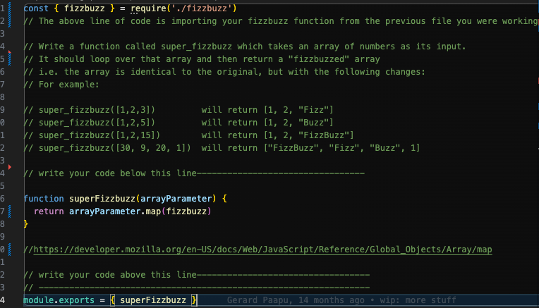
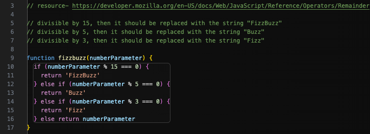

Problem Solving
Overcoming Simple Code Problems
In software development, I faced a challenge implementing FizzBuzz logic
for an array in JavaScript. Despite its apparent simplicity, my initial
attempts were marked by frustration as the code didn't behave as
anticipated. Determined to independently conquer the challenge, I
engaged in an exhaustive search across various resources, eventually
finding the missing piece on developer.mozilla.org. This experience
underscored the importance of precise searches and the humility to seek
guidance when lost in unfamiliar coding territories.

However, not every coding scenario revolves around obstacles. On another
occasion, I faced the classic FizzBuzz problem, a well-known puzzle in
the Dev Academy community. This time, the solution unfolded with more
systematic elegance. Employing a meticulous approach, I gained insights
by reviewing the pre-written tests on the test page. The satisfaction I
got from this smooth problem-solving process revealed the idea that
optimal solutions often require thinking outside the box and challenging
conventional expectations I originally had.

Reflect on how confident you feel using each of these problem-solving techniques/processes:
- Pseudocode: This is something I find imperative to do in order to comprehend the coding process thoroughly.
- Trying something: I definitely engage in this process frequently, learning from both successes and failures.
- Rubber ducky method: I consider it very helpful, although sometimes more effective when coupled with collaborative discussions with peers.
- Reading error messages: I acknowledge that I could use some more practice in deciphering error messages.
- Console.logging: I feel confident about using it, but I could probably incorporate it more strategically.
- Googling: I consider myself in the top tier of this skill set, effectively leveraging search engines to address coding challenges.
- Asking your peers for help: I definitely ask for assistance when needed, recognizing the value of diverse perspectives in overcoming challenges.
- Asking coaches for help: I haven't had the chance to engage with coaching resources yet, but I remain open to leveraging their expertise when necessary.
- Improving your process with reflection: Definitely a skill I've improved during this course, as it wasn't something I used to prioritize.
Reflect on a time you were reluctant to ask for help. Consider what made you reluctant to do so. What might you try differently next time?
Reflecting on instances where I hesitated to seek help, it often revolved around the fear that the issue might be embarrassingly simple – a mere typo, as it usually turned out. The hesitation sprang from a sense that I should have reviewed my work before interrupting someone else's workflow. There's a constant underlying concern about wasting their time or disrupting their focus for me. However, if I genuinely find myself stuck, I've learned to overcome this reluctance and seek help. Additionally, taking a short break for a clearer perspective has proven effective, often revealing the solution upon returning with a fresh head.